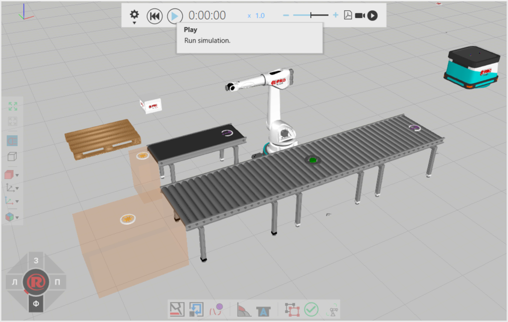
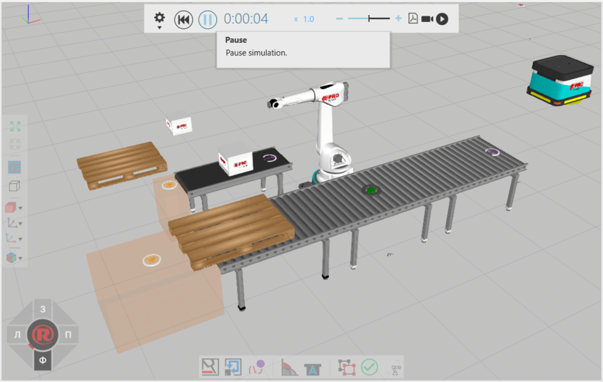
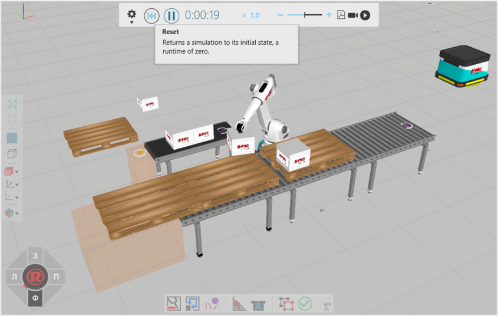

The controls for running a simulation are positioned at the top-middle section of the 3D world. These controls allow you to customize the simulation time, speed, and runtime.

When you run a simulation, components in a layout may perform one or more tasks. For example, a robot may execute its program and a conveyor system may move and route components along paths.

When you reset a simulation, the simulation returns to its initial state, so any tasks performed during the simulation are, in most cases, undone. For example, components created during a simulation would be removed from the 3D world, and a robot would reset to the initial joint configuration the robot had at the start of the simulation.

If you want to record a simulation, you have the option of exporting a simulation as a 3D PDF, video, or animation that can be used for a virtual reality experience. The recording can start/stop at any moment during a simulation.
Every component has a PDFExportLevel property which defines how the component's geometry is exported to a 3D PDF.